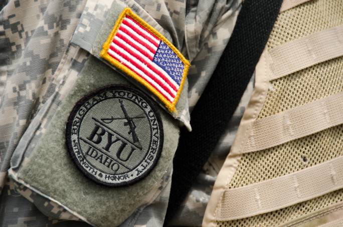
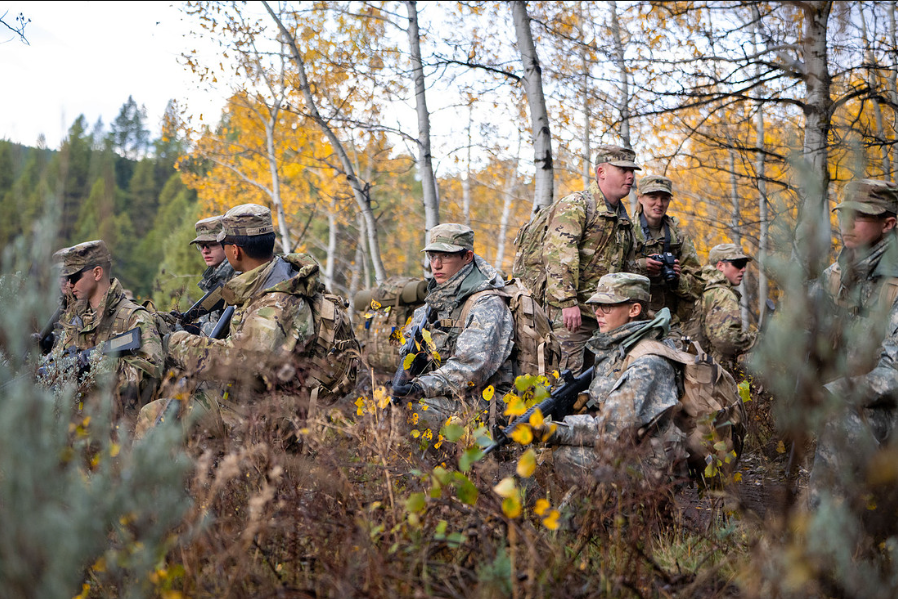
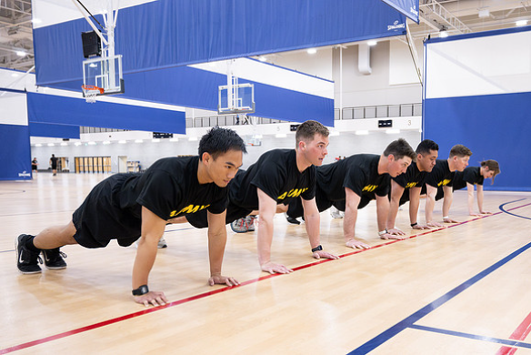
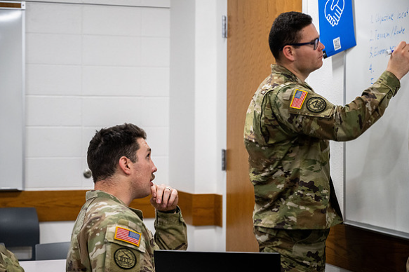
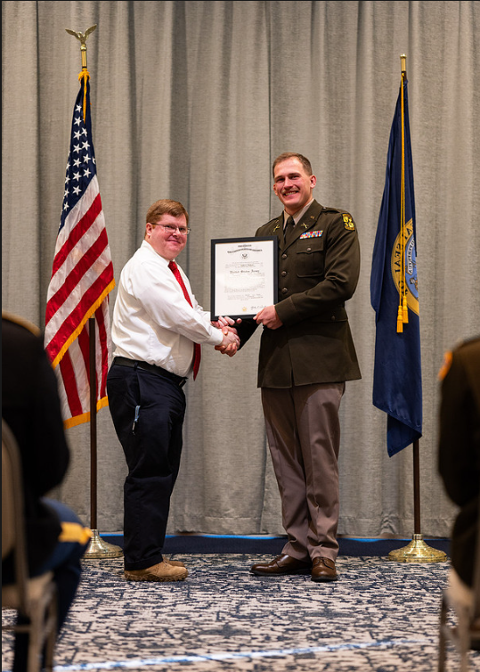

Army ROTC stands for Reserve Officers’ Training Corps. It is a program that prepares college students to become officers in the United States Army while completing their college degree.
Students in the program are called cadets. Cadets participate in leadership training, physical training, and classroom instruction designed to develop the skills needed to lead soldiers in the future.
One of the main benefits of ROTC is that students can complete their normal college education while also gaining leadership experience and professional training.
Leadership labs are hands-on, three-hour training sessions and one of the most interactive parts of the ROTC program. Moving outside the classroom, cadets apply concepts from their Military Science courses to realistic outdoor missions, practicing basic tactics like land navigation, movement techniques, and communication.

Each cadet takes turns leading their peers through these scenarios, gaining practical experience in making decisions, giving instructions, and adapting on the fly. Instructors and upper-level cadets observe and provide direct feedback, helping cadets build the confidence, teamwork, and problem-solving skills needed to lead effectively under pressure.
Physical fitness is an essential part of the ROTC program, as officers must be prepared to lead in physically demanding environments and meet the rigorous standards of the AFT. To build this baseline of strength, endurance, and mental toughness, cadets participate in group Physical Training (PT) three times a week: Monday, Wednesday, and Friday at 6:30 a.m.

These early morning workouts go beyond just running, push-ups, and circuit training; they often include obstacle courses and team-based challenges. By working out together and pushing each other, cadets build the discipline, accountability, and strong camaraderie needed to succeed in the program and maintain a healthy lifestyle.
Taken alongside regular college coursework, Military Science classes provide the theoretical foundation for the hands-on training cadets experience in leadership labs. These courses focus on the core knowledge professional skills needed to become an effective Army officer.

The curriculum explores military history, ethics, and tactical planning, teaching students how to evaluate risks and make sound decisions under pressure. As cadets progress through the program, they are given increasing responsibility to think critically and lead their peers. Ultimately, these classes build the confidence and judgment required for military service, while developing universal leadership and communication skills that translate seamlessly into any civilian career.
During the first 2 years of ROTC, students can explore the program and learn about leadership without committing to military service.

Students who choose to continue in the program and accept scholarships may commit to serving as Army officers after graduation. After completing their degree and ROTC training, graduates commission as officers and begin their leadership careers.
ROTC graduates have several options after commissioning. Some serve on active duty in the Army, while others serve in the Army Reserve or the National Guard.
The leadership training provided by ROTC also prepares students for careers outside the military. Many former cadets go on to work in business, government, engineering, and public service where strong leadership skills are highly valued.